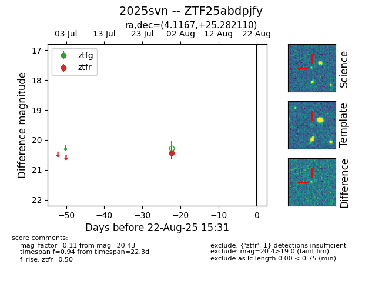

Target 2025svn at 2025-08-22 15:31, see:
FINK: fink-portal.org/ZTF25abdpjfy
Lasair: lasair-ztf.lsst.ac.uk/objects/ZTF25abdpjfy
ALeRCE: alerce.online/object/ZTF25abdpjfy
TNS: wis-tns.org/object/2025svn
YSE: ziggy.ucolick.org/yse/transient_detail/2025svn
alt names
ZTF25abdpjfy (ztf,alerce)
2025svn (tns,yse)
coordinates:
equatorial (ra, dec) = (4.1167,+25.28211)
galactic (l, b) = (113.0333,-36.91656)
photometry
last ztfr=20.43
1 ztfr detections
